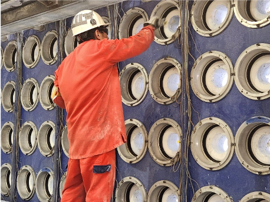

"As a Level 1 Casting Operator, to be successful, an employee needs to have strong attention skills--to be able to understand table conditions and to keep them in good working condition. It is important for the person in this role to have a strong sense of urgency."
This position is responsible for performing basic machine operations and maintenance within the aluminum casting process while ensuring adherence to safety, quality, and production standards. This role requires effective time management, routine problem-solving, and the ability to gather and analyze basic data to identify and address issues. The ideal candidate will demonstrate reliability, critical thinking, and a strong willingness to learn while collaborating effectively in a team-oriented environment. Key responsibilities include routine preventative maintenance, basic use of hand tools, and contributing to process improvements to achieve production goals. The role also involves clear communication, embracing change, and making routine decisions with guidance when faced with more complex situations.
This position suits individuals who are results-driven, adaptable, and committed to achieving basic operational goals while continuously growing their skills in machine operation and problem analysis.
"Casting Operator Level 2 is a critical role in the aluminum casting process, responsible for operating machinery, performing routine maintenance, and ensuring safety, quality, and production standards are met. This position demands strong time management skills, problem-solving abilities, and a proactive approach to gathering and analyzing basic data to identify and resolve operational issues effectively."
Candidates must demonstrate reliability, critical thinking, and a continuous improvement mindset, focusing on identifying and addressing process inefficiencies while remaining open to learning and development. The role requires a team-oriented individual capable of clear communication, collaboration, and adaptability in a dynamic manufacturing environment. Key responsibilities include preventative maintenance, basic use of hand tools, routine diagnostic checks, and supporting operational goals by contributing to process enhancements.
The ideal candidate will embrace change, make routine decisions confidently, and seek guidance when faced with complex challenges. Additional responsibilities include operating machinery safely, completing basic tasks to meet production goals, and applying analytical skills to diagnose and resolve routine problems. The position offers an opportunity to grow technical expertise in machine operation and maintenance while contributing to the team's overall success.
This role is best suited for results-driven individuals who are goal-oriented, dependable, and eager to advance in a fast-paced, hands-on industrial environment.
Casting I: Can manage own time
Casting II: Can manage own and other's time
Casting I: Can locate basic information
Casting II: Can locate and gather basic information
Casting I: Can solve routine problems
Casting II: Can solve non-routine problems
Casting I: Can gather basic information
Casting II: Can gather and organize basic information
Casting I: Can identify basic issues
Casting II: Can identify and implement basic improvements
Casting I: Can be counted on to meet commitments
Casting II: Can be counted on to meet commitments
Casting I: Can identify simple problems. Demonstrates a willingness to learn and apply analytical skills
Casting II: Can identify and analyze basic problems. Participates in problem-solving tasks, focusing on understanding and interpreting available information
Casting I: Can complete basic tasks
Casting II: Can complete intermediate tasks
Casting I: Can effectively work in a team
Casting II: Can lead a team
Casting I: Can collect basic data
Casting II: Can collect, organize, and interpret basic data
Casting I: Open to learning new things
Casting II: Seeks out learning opportunities. Seeks out new information, ideas and resources to enhance personal growth
Casting I: Can communicate effectively
Casting II: Can communicate persuasively
Casting I: Can make routine decisions, Seeks guidance and support from team members and supervisors when faced with more complex decisions
Casting II: Can make moderate decisions. Considers available information, potential consequences, and organizational goals when making decisions
Casting I: Can understand problems
Casting II: Can understand problems
Casting I: Can cope with changes
Casting II: Can cope with changes
Casting I: Perform routine checks, such as lubricating, moving parts, cleaning equipment, and tightening loose bolts
Casting II: Perform routine checks, such as lubricating, moving parts, cleaning equipment, and tightening loose bolts
Casting I: Basic Machine Operation
Casting II: Basic Machine Operation
Casting I: Basic use of hand tools
Casting II: Basic use of hand tools
Casting I: Can Complete and achieve basic goals
Casting II: Can Complete and achieve basic goals
Casting I: No requirements
Casting II: Recognizes and understands personal emotions, strengths, and weaknesses, and their impact on interactions with others
Casting I: No requirements
Casting II: Data entry, using a computer and use of MS Word or Excel
Casting I: No requirements
Casting II: Knowledge of basic mobile equipment inspection
Casting I: No requirements
Casting II: Intermediate Troubleshooting